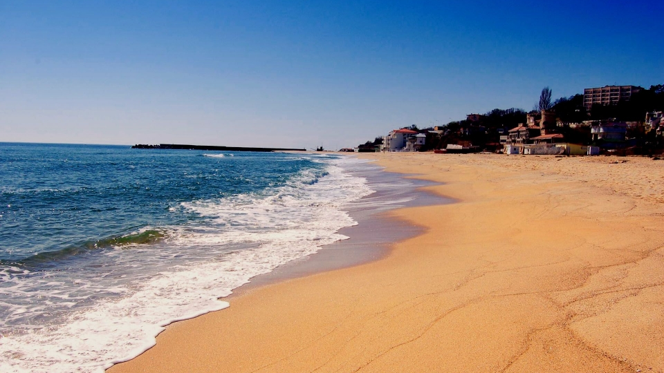
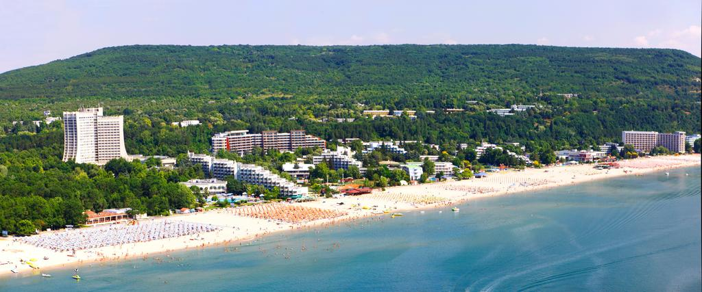
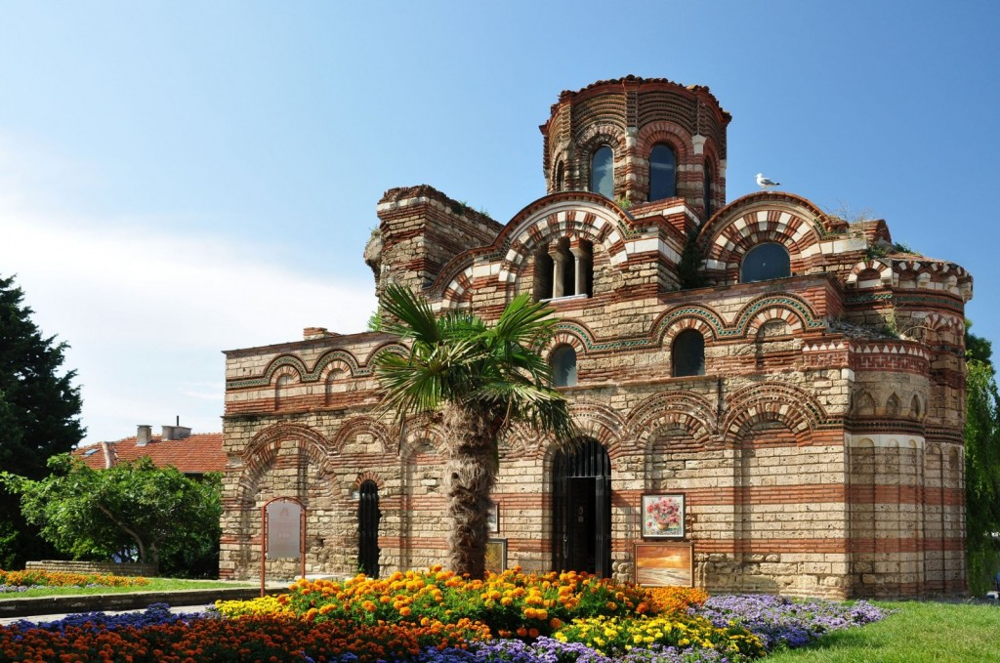

Ce vizităm în Bulgaria?
Nisipurile de Aur
Numele statiunii Nisipurile de Aur provine dintr-o veche legenda a locului care spune ca in urma cu foarte multi ani, niste pirati au ingropat o mare comoara pe faleza Marii Negre, la nord de orasul Varna, iar natura s-a razbunat pe pirati transformind aurul intr-un nisip splendid. Statiunea Nisipurile de Aur datorita frumusetii naturii, climei propice, nisipului fin si auriu si izvoarele termale, este socotita perla litoralului bulgaresc. Apa marii este limpede si linistita raminind calda chiar si in timpul noptii , iar sezonul estival in aceasta statiune este deschis din luna mai pina in luna octombrie.Sursele de ape minerale din Nisipurile de Aur ofera tot anul sanatate si frumusete. Din cauza proprietatilor lor terapeutice.Daca sunteti o persoană sportiva si aveti nevoie de o odihna activa la mare, Nisipurile de Aur sunt descoperirea dumneavoastra. Iahturi, barci-catamaran, ski de apa, baloane, surfing si, „banane ” gonflabile sunt doar o parte dintre atractiile pentru amatorii senzatiilor de mare. Iubitorii calariei vor avea placerea sa se plimbe alaturi de caii perfect instruiti insotiti de instructori profesionisti.Odata cu caderea serii, în statiune începe o fiesta infinita de lumina, sunete si distractii de noapte. Programele de varietate, bucataria extraordinara si bauturile excelente va vor determina sa participati la o adevarata sarbatoare. Ruleta, automate de jocuri, black-jack si inca multe alte jocuri de noroc vor provoca spiritul dumneavoastra aventurier despre care nici nu banuiati ca exista. Dacă sunteti amatori ai dansurilor, va veti simti cel mai bine si confortabil în cluburile moderne de noapte de pe litoralul marii.Puteti vizita urmatoarele obiective turistice: Manastirea Aladja este una dintre marile atractii ale statiunii Albena, situata la doar cativa kilometri de aceasta. Este o locatie must-see care merita sa intre pe lista cladirilor pe care sa le vizitezi. Numele Aladja inseamna „colorat”, iar manastirea chiar este una plina de culoare. Parcul Natural Nisipurile de Aur este considerat a fi o zona protejata. Este locul in care sa te relaxezi intr-o plimbare prin padurea de stejar, de aproape 10 kilometri lungime. Potrivit criteriilor Uniunii Internationale pentru Conservarea Naturii, acesta padure se incadreaza in a cincea categorie a listei cu teritorii protejate. Parcul Natural Nisipurile de Aur are o suprafata totala de 9.2 de kilometri si este o rezervatie naturala protejata prin lege inca din 1943. Padurile parcului urmeaza linia de coasta si imbratiseaza practic statiunea Nisipurile de Aur. Aici se afla un arbore urias, care impresioneaza fiecare vizitator. Aquapolis Aqua Park este raiul turistilor cu copii. Este locul in care sa petreci o zi intreaga, dandu-te pe tobogane acvatice, balacindu-te in piscine si simtind adrenalina sporturilor extreme la maximum. Acesta se afla in partea nord-estica a Nisipurilor de Aur, are o capacitate de 3.000 de persoane si este amenajat cu diferite zone de distractie, pentru toate categoriile de varsta. Arrogance Music Factory este un „must go” pentru toti iubitorii evenimentelor galagioase. Clubul se afla pe o alee ce duce spre coasta statiunii, nu departe de centru. Oricine isi poate gasi aici stilul preferat de muzica, clubul fiind impartit in patru sectoare cu diferite genuri muzicale. Maimunarnika Rope Parkeste un loc minunat pentru micii aventurieri, situat in apropiere de statiunea Nisipurile de Aur. Ajuns aici, simti ca intri in lumea lui Tarzan, datorita unui sistem bine gandit pentru practicarea sporturilor de aventura.
Albena
Farmecul particular al statiunii Albena nu tine doar de plajele fine, natura vie, apa limpede, izvoarele minerale si hoteluri stilate. Albena este o lume plina de atractii, pe care iti recomandam sa le strabati intr-o vacanta in Bulgaria. Aceasta este o statiune bulgareasca remarcabila prin plaja sa de 150 de metri lungime, cu nisip fin si pe limpezi. Este statiunea in care turistii pot alege dintr-o gama variata de hoteluri, cu numeroase facilitati atractive, majoritatea cu piscine proprii, chiar daca sunt aproape de plaja. Pe langa aceasta, statiunea a fosta menajata cu unul dintre cele mai mari centre de spa&wallness din Bulgaria. Aceasta foloseste exclusiv apa din izvoarele minerale locale – hipotermale cu temperaturi de 30Co, usor mineralizate, cu continut de hidrocarbonat cu calciu si magneziu. Aici poti vizita atractii turistice precum: Rezervatia naturala Baltata este o padure care se intinde de-a lungul raului Batova, este locul in care vei descoperi o alta lume. Gradina Botanica din Balcic care se intinde la 10 kilometri de Albena. Kranevo este o alta statiune de vacanta iubita datorita fortaretei Romane si a izvoarelor minerale naturale. Ea se afla la jumatate de ora de mers pe jos de Albena, daca mergi de-a lungul plajei de nisip.
Nessebar
Nessebar este unul dintre cele mai vechi orase din Europa, fondat de traci, in jur anului 3000 i.Hr., si considerat cel mai bogat oras bulgaresc cu monumente arhitecturale din Evul Mediu. Acesta se mandreste cu 23 de biserici si monumente antice, de la bazilica crestina si pana la o biserica bizantina domizata. Printre alte monumente existente in Nessebar se afla Biserica Santa Sofia si o fortareara din Evul Mediu, de pe vremea cand Nessebar era unul dintre cele mai importante orase bizantine de pe coasta de vest a Marii Negre. Muzeul Arheoloqic gazduieste o colectie de artefacte descoperite in urma unor sapaturi arheologice in regiune, alaturi de icoane ce apartin scolii de pictura din Nessebar. Este unul dintre locurile intens vizitate de turisti si punctul de plecare spre diferite situri culturale, aflate in diferite zona ale orasului. De aici se organizeaza excursii cu ghizi, care te vor duce sa vizitezi ziduri antice de fortarete, biserici medievale, case renascentiste si multe alte obiective, legate istoric de acest muzeu. Zidurile Fortareteiiti ofera o plimbare inedita. Cele mai bine conservate ziduri de afla la poarta orasului si dateaza din secolele lll-IV, ele fiind construite din din blocuri mari de piatra cioplita. Sediul vechii Episcopii obisnuiasa fie cea mai mare biserica din Mesembria, iar vestigiile sale impresioneaza chiar si in zilele noastre. Arhitectura sa este clasica perioadei de inceput a crestinisumului, cladirea purtand hramul Sfintei Sofia, care simboliza intelepciunea. Biserica Sfantul Ioan este una dintre cele mai frumoase biserici din Nessebar. Biserica a fost ridicata intr-o forma patrata, cu patru arcade semicilindrice, impodobite cu cruci, iar majoritatea decoratiunilor prezinta piatra si caramida. Casele din Nessebar Este imposibil sa ajungi in Nessebar si sa nu faci ocolul orasului vechi, sa te plimbi pe strazile inguste si pietruite ale orasului, fotografiind casele din perioada Renasterii bulgaresti (100 la numar), inca locuite, piatetele si fantanile sale. Casele din Nessebar au un singur etaj, sunt construite din piatra si lemn, fiind considerate un adevarat muzeu viu, cu o arhitectura caracteristica locuintelor de la Marea Neagra.